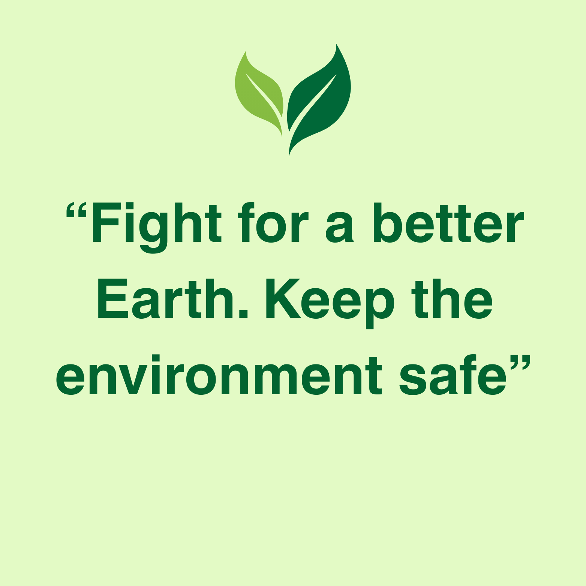

Earth Sustainability
Restore nature where people live

Restore nature where people live
Your support keeps our projects alive from planting indigenous trees and protecting waterways to teaching practical sustainability at schools and communities. Every rand you give moves us closer to a healthier, more resilient planet.
Once-off Donations (suggested tiers)
Example (R500 gift): 1 sapling + after-care, class learning kit, and support for data reporting on tree survival. 
|
Monthly GivingPrefer to spread your support across the year? Set a monthly amount that fits your budget and help us plant more, do more workshops, and do more clean-ups with confidence.
We will email short project updates so you can see your impact. Thank you for your contribution to making our planet a better place. 
|
Payment Options
After donation you will receive a short acknowledgement email. For EFTs, please send proof of payment to donate@earthsustainability.org |
EFT Banking Details
|
We keep admin lean so more of your rand reaches the field. Below is a typical allocation of once-off and monthly gifts
Indicative split (Target)
|
Example Use of Funds
|
Card Payments are processed securely; we do not store full card details. We conduct financial reviews, and internal checks quarterly. If an error occurs with your donation, contact us within 7 working days for a correction or refund. Personal data is handled responsibly and only to process your contribution and impact updates.
|
"I joined the beach clean-up campaign and it was eye-opening to see the impact a small
team can make in a few hours. It felt meainingful and motivated me to volunteer again."
- Mishka Dewlok.
|
"After attending a water conservation session, our family reduced household water use by
30%. The practical tips were easy to implement and made an immediate difference." - Adam
Ismail
|
Choose a tier above or make a custom gift. If you're donating via EFT, please email your proof of payment to donate@earthsustainability.org so we can acknowledge your contribution and send a thank-you note.